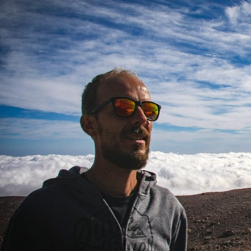
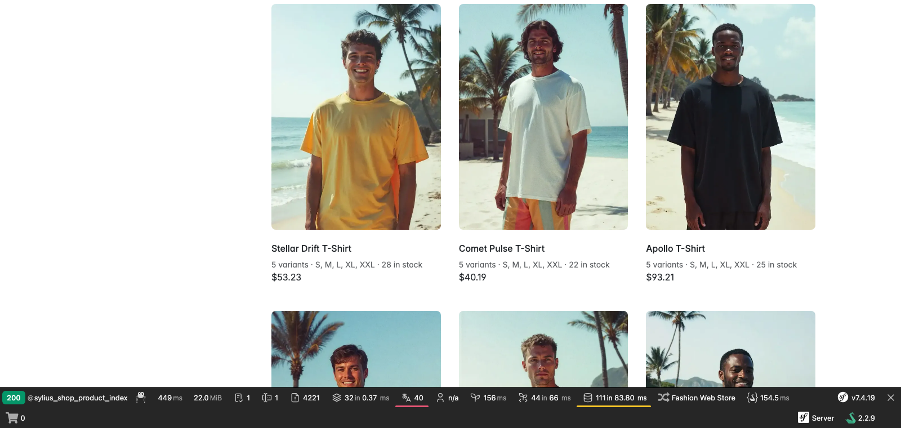
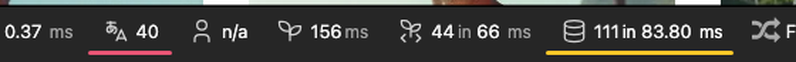

Symfony AI Mate w praktyce, na przykładzie Syliusa
Michał PysiakSylius
Jedno zdanie tezy w formie pytania. Model zna PHP i Symfony z treningu. Ale czy zna twój projekt? Różnicę robi nie kolejny lepszy model, tylko to, co dostaje w momencie potrzeby.
O mnie
Cześć!

Michał Pysiak
Co robię w Syliusie
rozwijam moduł B2B w Syliusie
audytuję projekty e-commerce i doradzam zespołom na wdrożeniach
buduję narzędzia AI dla developerów Syliusa
jestem fanem rozwiązań open source
30 sekund, bez CV.
Jak to szło u nas
Goły prompt, potem coraz dłuższe instrukcje
Era 1 · goły prompt
Model zgaduje
musi odpowiedzieć, nawet gdy nie wie
braki w kontekście dopowiada z treningu
niedeterminizm: to samo pytanie, różne odpowiedzi
zero kontroli, kiedy zgadł
Era 2 · instrukcje
Instrukcje rosną, zgadywanie zostaje
odruch: opiszmy mu projekt w CLAUDE.md
każda sesja płaci za całość
u nas: ~2 000 linii instrukcji
kod się kompiluje, ale łamie konwencje
Zgadywanie nie jest błędem modelu. Jest tym, co model robi, gdy nie ma faktu.
Era 1: model zgaduje, bo musi odpowiedzieć. Era 2: nasza reakcja, instrukcje. Zapamiętajcie ten slajd, wrócimy do niego jako do strony „same skille".
Diagnoza
Instrukcje nie skalują
Instrukcje
siedzą w kontekście na zapas, każda sesja płaci za całość
opisują projekt „jak był", nie „jak jest"
model i tak musi wywnioskować stan: który plugin, który hook
niedeterministyczne, nie da się poprawić
Fakt z narzędzia
przychodzi w momencie potrzeby, nie na zapas
zmierzony z runtime'u, „jak jest"
kompaktowy, ustrukturyzowany
deterministyczny, poprawiasz tool
Guess in → guess out.
Kontekst ma budżet. Fakt o projekcie powinien przyjść w momencie potrzeby, zmierzony, tani. Nie siedzieć w kontekście na zapas. Jedyna rzecz, którą da się optymalizować, to tool.
Przykład · to samo w obu przebiegach
Czysty Sylius, jedna customizacja
Sylius Standard 2.2, domyślne fixturki. Lista produktów T-shirts › Men: 9 produktów × 5 wariantów
Ticket: pod nazwą produktu pokaż „5 variants · S, M, L, XL, XXL · 28 in stock”
Zrobione po syliusowemu: twig hook + szablon, zero PHP. Szablon iteruje po wariantach i ich opcjach
Efekt: 71 → 111 zapytań, 45× ten sam SELECT


Toolbar profilera: 111 zapytań, na żółto. Sam profiler to widzi. Pytanie, czy agent go zapyta.
Kontekst przed nagraniem 1. Customizacja jest poprawna w sensie konwencji (hook, nie override), błąd siedzi w ścieżce danych: pętla w szablonie po relacji = klasyczne N+1. Czysty listing robi 71 zapytań (Sylius sam robi ×9 per produkt), z customizacją 111, z czego 45 to ten sam SELECT po option values. Oba nagrania dostają tę samą stronę i ten sam prompt.
Demo · przebieg 1 · goły agent, bez Mate
nagranie ×5
Autoplay po wejściu na slajd; spacja/k = pauza/play, j/l = −10 s/+10 s, pasek na dole = przewijanie myszą, strzałka = dalej. Goły agent, ten sam prompt. 5 minut przyspieszone do minuty. Kończy się na zdaniu o N+1.
on wie, że profiler istnieje, i dobiera się do niego ręcznie
kilka tur łopatologii, zanim zobaczy zapytania
Co to znaczy
wiedza jest, brakuje ścieżki
w małym projekcie trafi, w dużym ta sama metoda kosztuje więcej
Bez toola ogarnie. Pytanie: za ile?
Zaraz po nagraniu. Model zna Symfony, próbował curl na /_profiler, czytać pliki z var/cache — wiedza była, brakowało ścieżki.
Skąd te 5 minut · piramida Dave'a Liddamenta
Czego model nie wie, to zgaduje
człowiekmaszyna
Odpowiedź żyła na dole. Profiler, kontener, logi: rzeczy, które nie zgadują, tylko wiedzą. Agent spędził 5 minut piętro wyżej, wnioskując z kodu.
Dół egzekwuje kod. Środek model. Góra człowiek.
Wszystko wyżej działa tylko dlatego, że podstawa jest solidna.
Diagnoza 5 minut z nagrania. Piramida Liddamenta z SymfonyLive Berlin, Johannes dopisał do podstawy profiler i kontener. Podświetlam od dołu: kod, model, człowiek. Jedno przejście, bez rozwijania pięter — to już nie wypełniacz. Przejście do 8: „Mate to jest właśnie dostęp do dołu tej piramidy".
Symfony AI Mate
Czym jest Symfony Mate
Developerski serwer MCP*
dla aplikacji PHP i Symfony; dev dependency, component symfony/ai
Własny kontener obok aplikacji
Mate nie wpina się w kernel: własny kontener DI, toole i skille wykrywane z Composera
Rozszerzalny
własne toole i skille prosto w projekcie; do dzielenia między projektami: extension = zwykła paczka Composera
Z każdym agentem
Claude Code, Codex, Cursor, Copilot, JetBrains AI
Platform · Agent · Store → twoja aplikacja używa AI Mate → AI używa twojej aplikacji
Wejście: „Mate to jest właśnie dostęp do dołu piramidy". Jak u Johannesa: outside-in. Reszta symfony/ai pozwala twojej aplikacji używać AI. Mate robi odwrotnie.
Zero sieci, sekundy. Agent dostaje instrukcje i skille w plikach. Między nagraniem 1 a 2 zmieniło się tylko to.
Bez .mcp.json, ale o tym na końcu. Fakty: interaktywny init robi też discover (skille); z --no-interaction skille instaluje dopiero `mate discover`. init ostrzega o brakującym .gitignore w paczce — kosmetyka.
Demo · przebieg 2 · ten sam prompt, nowa sesja, z Mate
Autoplay po wejściu; spacja/k = pauza/play, j/l = −10 s/+10 s, pasek = przewijanie. Nowa sesja po mate init. Pierwsza linijka: „Sprawdzę tę stronę profilerem Symfony przez Mate". 1:20 do zdania o N+1, w czasie rzeczywistym.
agent nie musi czytać kodu, żeby wiedzieć, gdzie jest problem
profiler zawsze wie, zgadywanie nigdy
Format przybliżony, do podmiany na realny output z bridge'a.
Co właśnie widzieliście
Wiedza była w obu. Ścieżka w jednym.
W obu przypadkach agent ogarnie.Kwestia czasu i tokenów.
W obu poszedł do profilera, jak developer.Goły: kilka tur łopatologii, ~5 minut do N+1. Z Mate: 1:20, a pierwsza linijka to „Sprawdzę tę stronę profilerem Symfony przez Mate”.
Agent nie jest mądrzejszy. Inne otoczenie.Ten sam model, ten sam prompt, ten sam projekt. A na Haiku z Mate: też 1:20, te same toole i skille.
Tury i czas widzieliście w nagraniach. Goły przebieg szedł na Fable 5.1, najmocniejszym dostępnym modelu, i tak 5 minut — nagranie przyspieszone ×5 (nakładka na wideo). Z Mate: 1:20 do tego samego wniosku, pierwszy ruch = skill profilera + tool. Trzeci przebieg: Haiku + Mate, też 1:20, załadował skille i wołał toole — najsłabszy model z Mate = najmocniejszy z Mate, najmocniejszy bez Mate 4× wolniej. Nagranie 3 w rezerwie po #19, jeśli zegar pozwoli. O tokenach tylko jakościowo.
metoda z #[MateTool(name, description)] w mate/src/, DI działa; init już dodał scan-dir
Własny skill bez extensiona
katalog w mate/skills + wpis w composer.json; mate discover instaluje go do .agents/skills/mate-* jak te z paczek. Extension dopiero, gdy ma jechać do wielu projektów
Teraz, gdy sala widziała efekt: jak to rozszerzyć. INSTRUCTIONS.md mówi agentowi kiedy.
Synergia
Skille + toole > każde z osobna
Same skille
Instrukcje puchną
Model dalej zgaduje. Nasza era 2.
slajd 3
Same toole
Binarka w vendorze
Agent nie wie, że ma czym pytać.
Mate Lab: goły CLI 0/10 i 0/10
Razem
Kiedy + jak jest
Skill mówi kiedy i po co. Tool mówi jak jest.
Mate Lab: 10/10 i 5/10
Widzieliście to przed chwilą: skill profilera + tool profilera.
Dlatego Mate od 0.12 dystrybuuje skille natywnie, a my wersjonujemy skill z toolami w jednej paczce.
Sedno środka. Mate Lab: Haiku, 2 zadania × 10 przebiegów, metryka = czy agent w ogóle sięgnął po Mate. Goły CLI 0/10 i 0/10. Serwer MCP (toole widoczne przez protokół, bez skilli) 3/10 i 2/10. CLI + skille i instrukcje w plikach 10/10 i 5/10. Decyduje widoczność. Johannes sam zastrzega: wzorzec, nie dowód statystyczny. Skille przez extra.ai-mate.skills od 0.12; 0.13 zmieniło instalację na kopie w .agents/skills.
Nasz case · sylius/sylius-mate-extension
Nasza domena: 29 tooli do Syliusa
Agent pyta zbootowany kernel tego projektu, nie zgaduje.
sylius_project_profile namespace, locale, kanał, mailerzamiast czytania composer.json, .env i configów
sylius_installed_plugins pluginy, dekoratory, encjezamiast zgadywania, czy stock żyje w MSI
sylius_twig_function_verify czy sylius_* istnieje i jaka sygnaturazamiast wymyślonego helpera Twiga ze slajdu 3
sylius_routes_show / sylius_route_inspect trasy, zdublowane prefiksyzamiast path() do trasy, której nie ma
sylius_hooks_find_for_template hook, w którym siedzi szablonzamiast grepa po szablonach
Nie profiler jest magiczny, tylko mechanizm zmierzonego faktu. Uczciwie: nasz extension bootuje kernel hosta (odwrotnie niż rdzeń Mate), bo hooków, gridów i dekoratorów nie da się wyczytać ze zrzutu XML.
Nasz case · skille
Toole to fakty. Skill to osąd.
Sześć skilli, jedno wejście.sylius-dev daje model myślowy i protokół „najpierw Mate”, resztę po domenie: resource, frontend, events, mailer, verify
Kiedy który tool. Zamiast opisywać projekt, skill mówi, jak go zapytać: profile → pluginy i dekoratory → hooki, zanim powstanie pierwszy plik
55 refuse-rules zamiast eseju. Pułapki DI, mailera i hooków jako reguły w osobnym pliku na żądanie. Sam SKILL.md ma 30–90 linii
$ ls .agents/skills/
mate-php-environment-checkmate-sylius-devmate-sylius-eventsmate-sylius-frontendmate-sylius-mailermate-sylius-resourcemate-sylius-verifymate-symfony-profiler-debuggingmate-symfony-request-triagemate-symfony-service-inspectionmate-system-information
Skill skurczony do osądu. Skille wersjonowane razem z toolami, w jednej paczce — upstream (Mate 0.13) doszedł do tego samego. Pięć przygaszonych to skille z rdzenia Mate i bridge'a Symfony, te same, które sala widziała w demo.
Your project
Harness engineering + context engineering > model
Zacznij od
jednego toola, który zastępuje najczęstsze zgadywanie
MCP był tylko transportem.Toole, schematy, runtime, skille, discovery: nic z tego go nie potrzebowało.
Skilli przez MCP nikt nie czyta.Claude Code, Codex, Copilot: wszystkie z plików. Warstwa plikowa i tak musiała powstać.
CLI + pliki są tańsze.Bez procesu, handshake'u i generowanego konfigu.
„Kill the transport, not the capability.” Johannes Wachter · The hardest code to delete
Wstęp jednym zdaniem: w Berlinie sam uzasadniał „Why MCP, Not Just a CLI?” (interactive context, jeden standard, per-tool zgody); pięć miesięcy później zmierzył i usunął. Cytat do mówienia: „ilość pracy włożonej w architekturę mówi zaskakująco mało o tym, czy powinna przetrwać kolejną”. Ostatnie zdanie: nawet transport tooli okazał się kwestią harnessu — teza z 17 raz jeszcze.
Co daje Mate w twoim projekcie · niekoniecznie Symfony
Podsumowanie
Dowolna aplikacja PHP
rdzeń nie zna frameworka, Symfony to jeden z bridge'ów. Legacy też
Cały zespół dostaje to samo
composer install daje każdemu devowi i każdemu agentowi te same toole i skille: Claude Code, Codex, Copilot, Cursor
Zero ingerencji w aplikację
dev dependency z własnym kontenerem. Nic w kernelu, nic na produkcji
Jedno źródło prawdy
toole i instrukcje w vendorze, wersjonowane z kodem. Nie w CLAUDE.md per osoba
Działa, gdy apka nie bootuje
kontener ze zrzutu, profiler i logi z dysku. Odpowiada, gdy najbardziej go potrzebujesz
Własny tool i skill bez extensiona
tool = metoda z #[MateTool] w mate/src, skill = katalog w mate/skills
Odpowiedź na „a co ja z tego mam, skoro nie robię w Syliusie ani w Symfony". Dwa punkty powtarzają 8–9 celowo, tu w roli „u ciebie też". Zespół: jeden composer require w projekcie i każdy dev, każdy agent ma to samo — koniec z CLAUDE.md, które każdy pisze po swojemu.
Dzięki
Pytania?
Slajdy, linki, komendy z demo: github.com/mpysiak/phpers-bydgoszcz-2026
Michał PysiakSylius
Zostaje na ekranie na Q&A. W repo: README z linkami (Mate docs, pack, extension, blog Johannesa, jego deck z Berlina), deck na GitHub Pages, komendy instalacji.